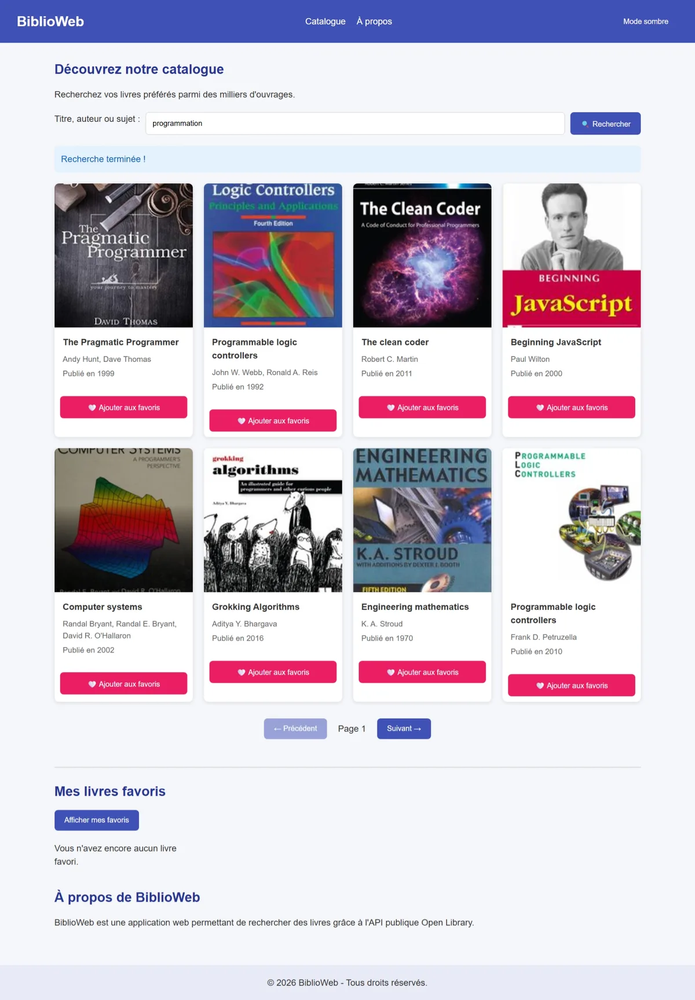
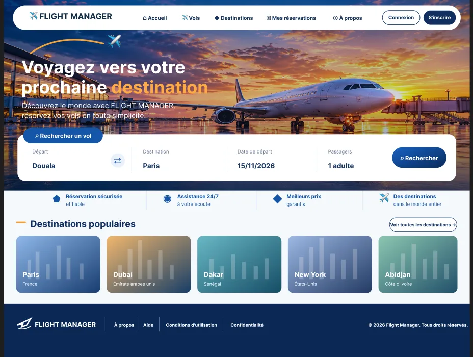
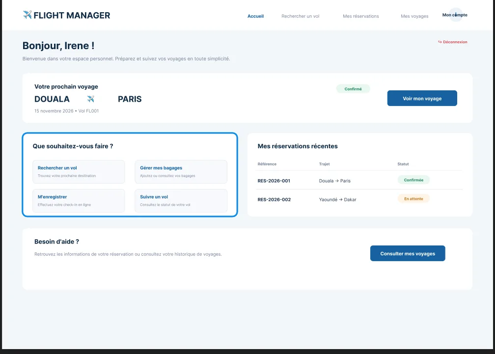
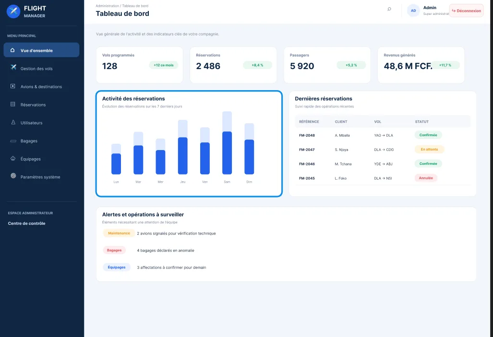
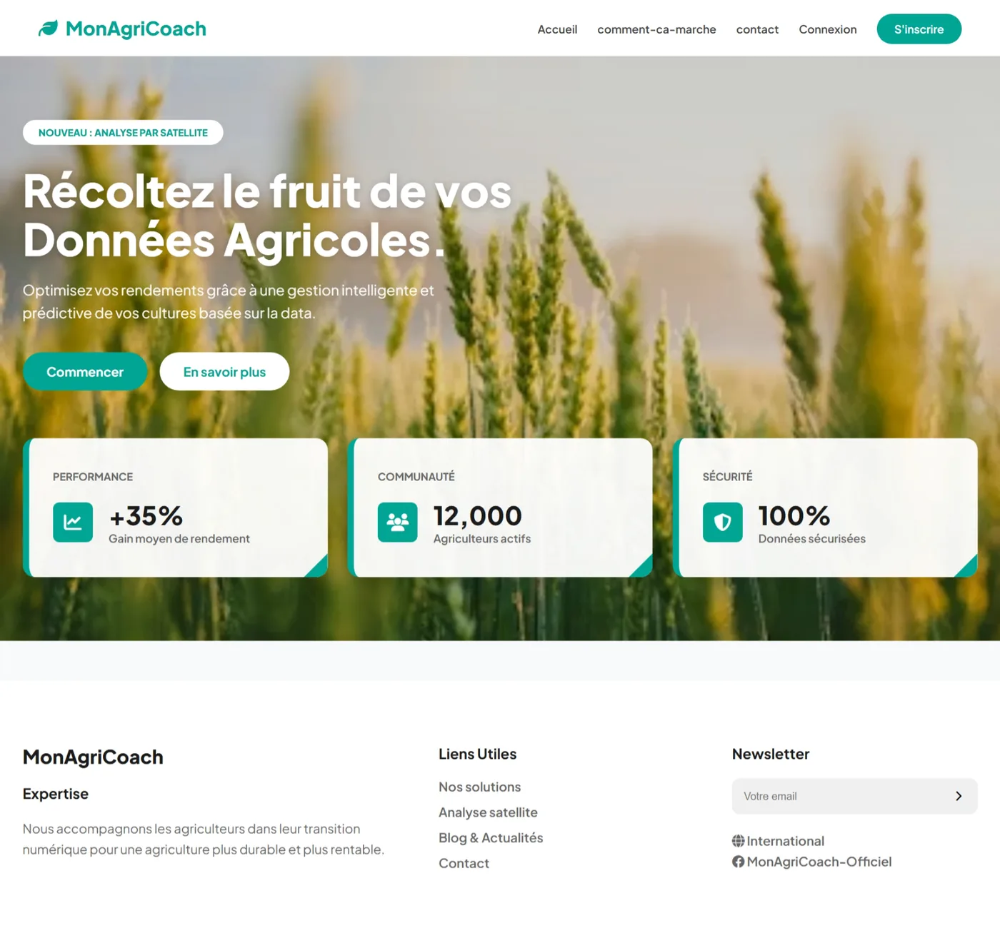
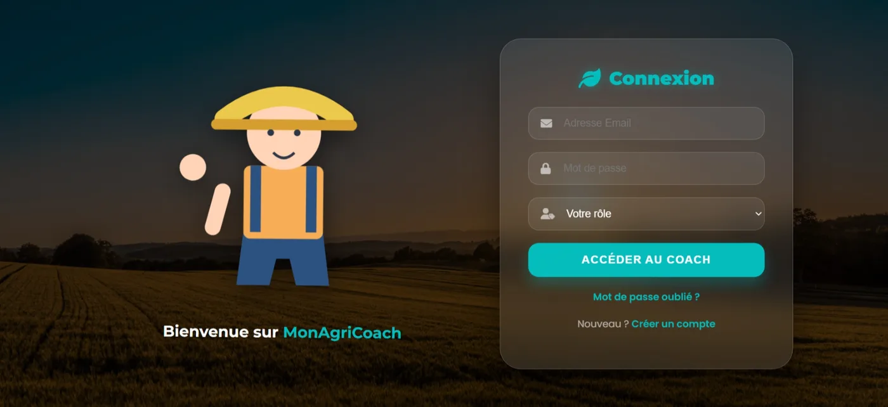
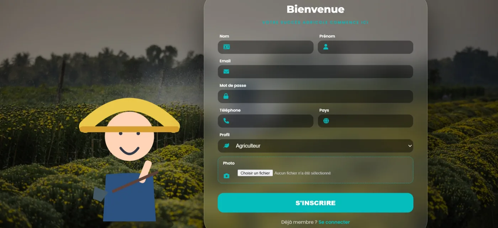
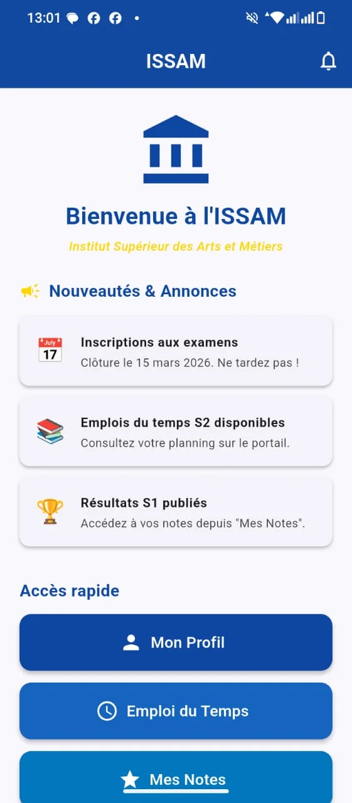
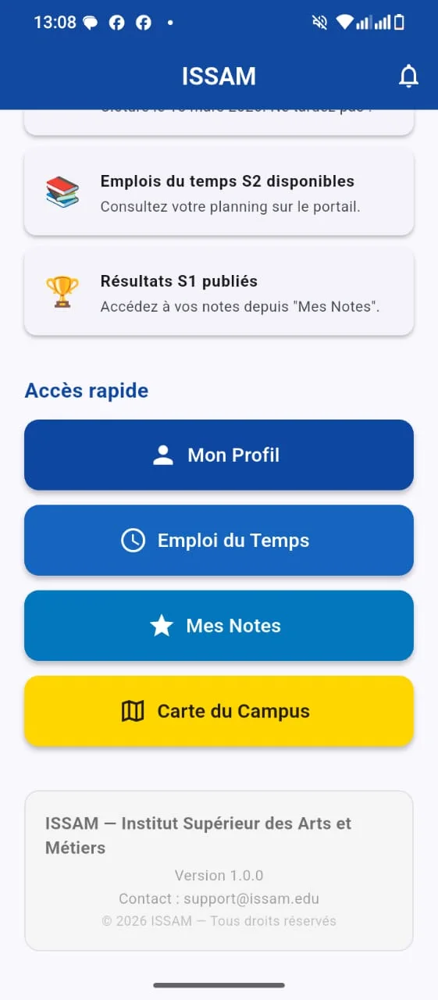

Frontend
 HTML
HTML CSS
CSS JavaScript
JavaScript React
React
Bonjour, je suis
Développeuse Junior | Web & Mobile
Je conçois des applications web et mobiles claires, utiles et agréables à utiliser, du formulaire d'inscription jusqu'à la base de données. Mon objectif : rejoindre une équipe technique où je peux livrer des solutions numériques modernes et progresser vite.
Disponible pour un stage · Yaoundé, Cameroun
Titulaire d'un BTS en Génie Logiciel, je poursuis une Licence Professionnelle en Génie Logiciel à l'Institut Supérieur de Sciences, Arts et Métiers (ISSAM) de Yaoundé.
Ce qui me motive : transformer un besoin concret en application qui fonctionne. J'aime autant construire l'interface que concevoir la base de données et brancher les API qui font vivre l'ensemble. J'ai déjà fait de la maintenance et du débogage en entreprise, travaillé en équipe selon la méthodologie Agile, et je continue de pratiquer sur mes propres projets.
Je cherche un stage académique ou professionnel pour mettre mes compétences au service d'un produit réel.
Cliquez sur une capture pour l'agrandir.

Application web de gestion et de recherche de livres. J'ai participé à son développement et à son amélioration, notamment pour la gestion et l'intégration des livres dans la plateforme.
HTML5CSS3JavaScript



Application de gestion de vols aériens. Les écrans ci-contre sont les maquettes Figma ; les captures de l'application seront ajoutées au fil du développement.
LaravelMariaDBFigma



Application web de gestion agricole : prévisions météo, suivi des cultures, alertes de stock et assistant IA pour guider les producteurs.
PHPCSS3MySQLGemini API
Application sur-mesure de suivi d'activités et de gestion des tâches quotidiennes, avec une interface moderne.
FlutterDartAPI REST
Voir le codeJeu 2D en JavaScript pur : rendu Canvas, détection des collisions, tirs et vagues d'ennemis.
JavaScriptHTML5 CanvasCSS3
Voir mon GitHub

Application mobile pour l'ISSAM : annonces, profil étudiant, emploi du temps, notes et carte du campus.
FlutterDartUI/UX
Voir mon GitHubSaisie, organisation et gestion de la base de données des ouvrages ; classement physique et numérique du fonds documentaire.
Maintenance corrective et évolutive d'applications web et mobiles, débogage et tests, travail en équipe Agile, découverte du déploiement et de l'intégration continue.
Gestion et intégration des livres dans la plateforme, amélioration de l'application.
Un stage, une collaboration, une question ? Écrivez-moi, je réponds vite.